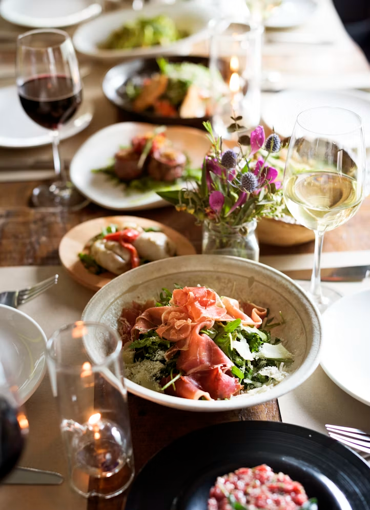

Our Story
About Us
At ROMALIYA, we believe exceptional dining begins with the finest ingredients and a passion for culinary excellence. Every dish is thoughtfully crafted by our chefs, blending timeless European flavors with modern techniques to create an unforgettable dining experience.
Culinary Philosophy


At the heart of our kitchen is a deep reverence for nature. We believe that true culinary artistry lies in preserving the pure, original flavors of fresh, carefully sourced ingredients. Guided by a minimalist approach, our dishes are thoughtfully crafted to reflect the tranquility and harmony of a lush forest, offering you a dining experience that is as refreshing, authentic, and unburdened as nature itself.